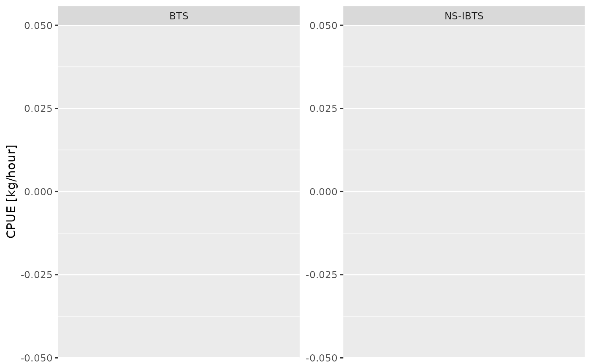
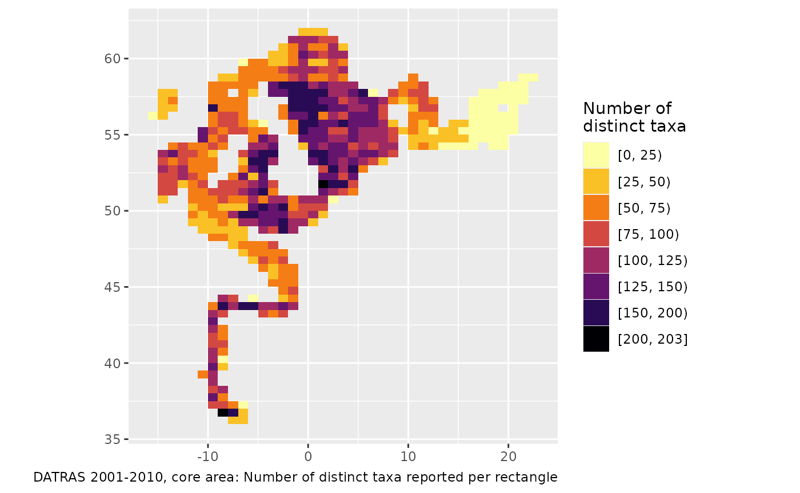
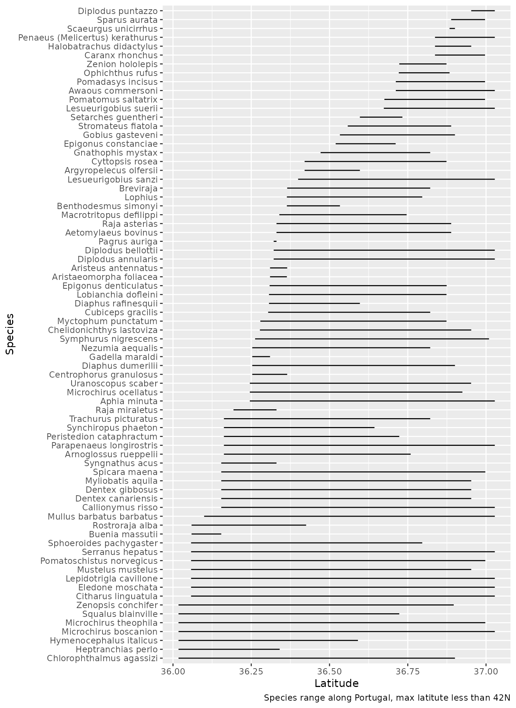

cases.Rmd
library(obus) # remotes::install_github("einarhjorleifsson/obus")
library(santoku) # nicer cuts
library(tidyverse) # dbplyr, dplyr, ggplot2 and family
#> ── Attaching core tidyverse packages ──────────────────────── tidyverse 2.0.0 ──
#> ✔ dplyr 1.1.4 ✔ readr 2.1.6
#> ✔ forcats 1.0.1 ✔ stringr 1.6.0
#> ✔ ggplot2 4.0.1 ✔ tibble 3.3.1
#> ✔ lubridate 1.9.4 ✔ tidyr 1.3.2
#> ✔ purrr 1.2.1
#> ── Conflicts ────────────────────────────────────────── tidyverse_conflicts() ──
#> ✖ tidyr::chop() masks santoku::chop()
#> ✖ dplyr::filter() masks stats::filter()
#> ✖ dplyr::lag() masks stats::lag()
#> ℹ Use the conflicted package (<http://conflicted.r-lib.org/>) to force all conflicts to become errorsIn the examples below all analysis prior to the “collect”-step is done within DuckDB, the collect-step is to import the table into R.
Here we create a quick and dirty biomass CPUE index. Some notes:
hh |>
select(.id, Survey, Year, Quarter) |>
filter(Survey %in% c("NS-IBTS", "BTS"),
Year >= 2002,
Quarter %in% c(1, 3)) |>
mutate(Year = case_when(Quarter == 1 ~ Year + 0.25,
Quarter == 3 ~ Year + 0.75)) |>
left_join(hl |>
filter(latin == "Gadus morhua") |>
mutate(b = n_hour * 0.00001 * length_cm^3) |>
group_by(.id) |>
summarise(b = sum(b, na.rm = TRUE)),
by = join_by(.id)) |>
collect() |>
# collect above because no translation (yet) for replace_na
mutate(b = replace_na(b, 0)) |>
ggplot(aes(Year, b, colour = factor(Quarter))) +
stat_summary(fun.data = "mean_cl_boot") +
facet_wrap(~ Survey, scales = "free_y") +
expand_limits(y = 0) +
labs(x = NULL, y = "CPUE [kg/hour]", colour = "Quarter") +
scale_colour_brewer(palette = "Set1")
#> Warning: Computation failed in `stat_summary()`.
#> Computation failed in `stat_summary()`.
#> Caused by error in `fun.data()`:
#> ! The package "Hmisc" is required.
Some notes:
# Grid resolution
dx <- 1
dy <- dx / 2
# Limit analysis to certain time and space
hh |>
filter(Year %in% 2001:2010,
between(ShootLongitude, -20, 25),
between(ShootLatitude, -Inf, 65)) |>
# assign coordinates to grid
mutate(lon = ShootLongitude%/%dx * dx + dx/2,
lat = ShootLatitude%/%dy * dy + dy/2) |>
left_join(hl |>
select(.id, latin),
by = join_by(.id)) |>
# analyse by grid
group_by(lon, lat) |>
summarise(n_taxa = n_distinct(latin),
.groups = "drop") |>
# load data into R memory because santoku::chop not in duckdb lingo
# chop is also nicer than cut - keeps things more orderly
collect() |>
mutate(n_taxa = santoku::chop(n_taxa, breaks = c(0, 25, 50, 75, 100, 125, 150, 200))) |>
ggplot() +
geom_tile(aes(lon, lat, fill = n_taxa)) +
scale_fill_viridis_d(option = "inferno", direction = -1) +
coord_quickmap() +
labs(x = NULL, y = NULL, fill = "Number of\ndistinct taxa",
caption = "DATRAS 2001-2010, core area: Number of distinct taxa reported per rectangle")
hh |>
filter(Year %in% 2020,
between(ShootLongitude, -12, 0),
between(ShootLatitude, 35, 47.5)) |>
inner_join(hl |>
filter(!is.na(length_cm)) |>
group_by(.id, latin) |>
summarise(n_hour = sum(n_hour, na.rm = TRUE))) |>
group_by(latin) |>
summarise(min = min(ShootLatitude, na.rm = TRUE),
med = median(ShootLatitude, na.rm = TRUE),
max = max(ShootLatitude, na.rm = TRUE)) |>
collect() |>
filter(min != max) |>
filter(max < 42) |>
ggplot(aes(med, reorder(latin, min))) +
geom_linerange(aes(xmin = min, xmax = max)) +
labs(x = "Latitude", y = "Species",
caption = "Species range along Portugal, max latitute less than 42N")
#> Joining with `by = join_by(.id)`
#> `summarise()` has grouped output by ".id". You can override using the `.groups`
#> argument.